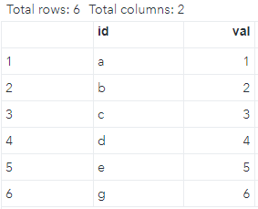

Introduction
Usually, if a problem can be solved in one programming language, this problem can also be solved in another programming language. However, each programming language has strengths and weaknesses, and each is better at some tasks than others. It is intriguing to combine the strengths of different languages, such as SAS and R. For example, there are many advantages to calling R from SAS according to this blog. This post summarizes the procedure to set up a PC for running R in SAS.
Prerequisites
Software:
- SAS version: 9.4M6
- SAS IML 15.1
- R 3.6.3
Operation system: Windows 10
Administrative authority: to install R and set up SAS, you need administrative rights to make changes to your computer.
Install R
SAS 9.4 only supports R 3.x.x., and you can find more info about R versions compatible with different versions of SAS here. You can download a hot fix to use the latest version of R (seemore info). But, in this post, We will use R 3.6.3. and not to worry about a hot fix.
As an R user, you may want to have the lasted R for your Rstudio, not R 3.6. We can install multiple versions of R and specify which version of R we want to have as the engine for RStudio. But to make R work in SAS, we will install an older version of R so that SAS can “talk” to. You can find old R releases at this link.
I installed R 3.6.3, since it is the most up-to-date version that is supported by SAS 9.4M6 without a hot fix.
Set up SAS
SAS requires two configuration options in order to communicate with R.
‘cfg’ file
First, the RLANG option must be set when SAS is started. This can be done by adding the following two lines in the SAS configuration file sasv9.cfg, which is at C:\Program Files\SASHome\SASFoundation\9.4\sasv9.cfg on my PC.
-config "C:\Program Files\SASHome\SASFoundation\9.4\nls\en\sasv9.cfg"
-RLANG
You can use any text editor to open and edit sasv9.cfg, but you need administrative rights to save the edited file.
To test if this setup is successful, we can run the following command in SAS:
proc options option=rlang;
run;
If you get the following statement:
NORLANG Do not support access to R language interfaces
then, you still do not have permission to call R from SAS yet, and you need to check the setup of the cfg file.
If you see this statement:
RLANG Enables SAS to execute R language statements.
then, great! You have the permission to call R from SAS now! But before you can actually call R in SAS, you need to tell SAS where R is installed on your PC.
R_HOME environment variable
SAS needs an R_HOME environment variable so that it knows where to find the correct, available version of R. In other words, the R_HOME environment variable tells SAS where it should go to find R. There are a few options to define an environment. One way is to modify the environment variable in Windows directly, by going to My Computer -> right click-properties -> Advanced -> Environment Variables, and setting it there. This also requires administrative rights.
Here is a good post about how to define the R_HOME environment variable. I borrowed the image from there:

One important thing is that you must specify the correct path to the R directory. In my case, since R 3.6.3 is installed in the folder/directory C:\Users\MyUserName\Documents\R\R-3.6.3, I set the ‘Variable value’ of R_HOME as C:\Users\MyUserName\Documents\R\R-3.6.3.
After the setting up cfg file and R_HOME, you may need to restart your computer.
Test
Now, we are ready to run some R code in SAS. All communication with R can be done using SAS’s PROC IML. The basic syntax is like this:
proc iml;
submit / R; /* Start submitting statements to R */
(R statements)
endsubmit; /* Stop submitting statements to R */
quit; /* end IML */
Basically, we just need to replace (R statements) with R code, and then we can have R running in SAS.
Let us do a simple example. Assume we have a SAS dataset have that has two columns: id and val (values).We can create have in SAS as follows:
DATA have;
INPUT id$ val;
DATALINES;
a 1
b 2
c 3
d 4
e 5
g 6
;
run;
The dataset have looks likes this:

Now we want to compute lagged and leading values from column val. In R, we can use lag() and lead() functions from dplyr package (included in tidyverse). So, in SAs we can do something like this to implement the R statements that can get lag and lead values:
proc iml;
call ExportDataSetToR("WORK.have", "dframe" ); /* send dataset from SAS to R */
submit / R;
library(tidyverse)
dframe_2 <- dframe %>%
mutate(behind = lag(val),
ahead = lead(val))
endsubmit;
call ImportDataSetFromR("WORK.want", "dframe_2"); /* send dataset from R to SAS */
quit;
The above code creates a dataframe dframe_2 (which has the lag and lead values) in R space and then sends dframe_2 to SAS space as the dataset want, which looks like this:

This is a very simple example. We can do much more complicated analytics by combining SAS and R.
Summary
The integration of R into SAS represents a convergence of two powerful analytics platforms. By harnessing the strengths of both SAS and R, we can access a more comprehensive toolkit for data analytics and visualization, enabling us to tackle complex analytical tasks with more efficiency and confidence.